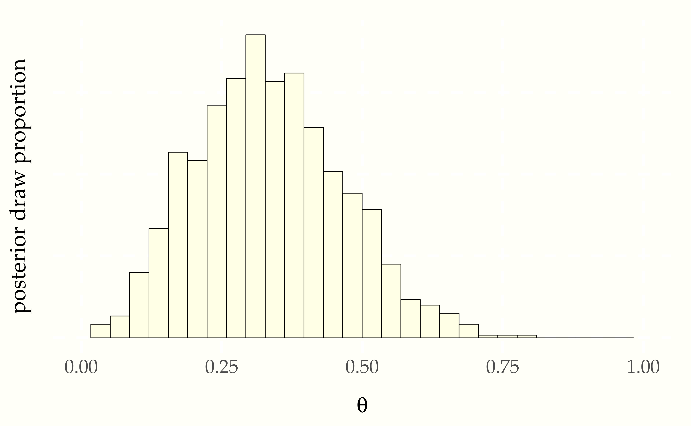
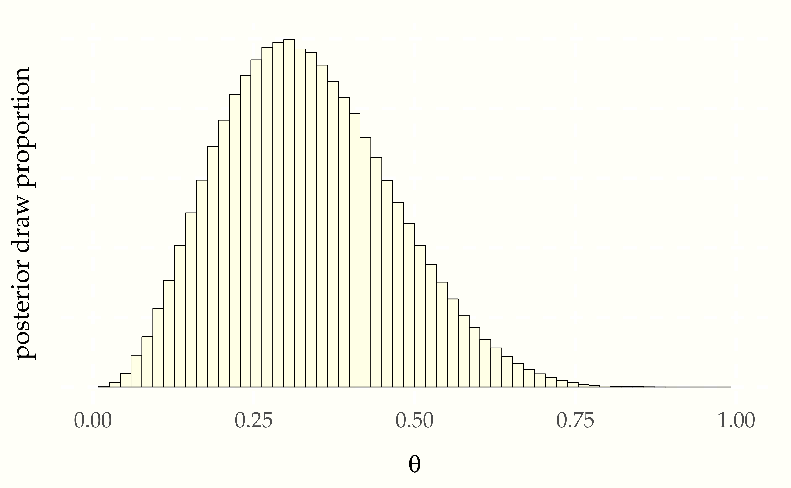
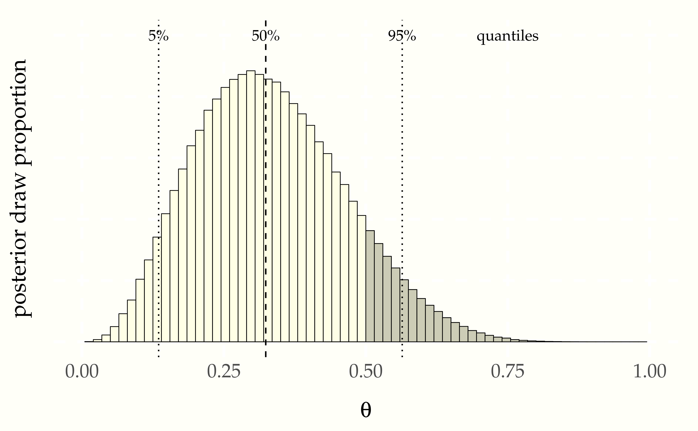
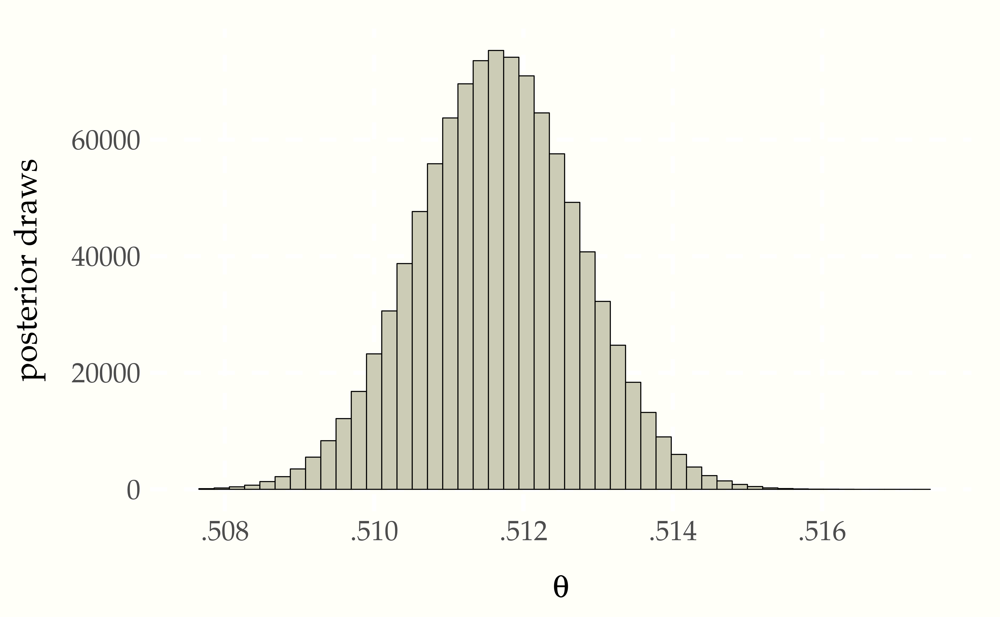
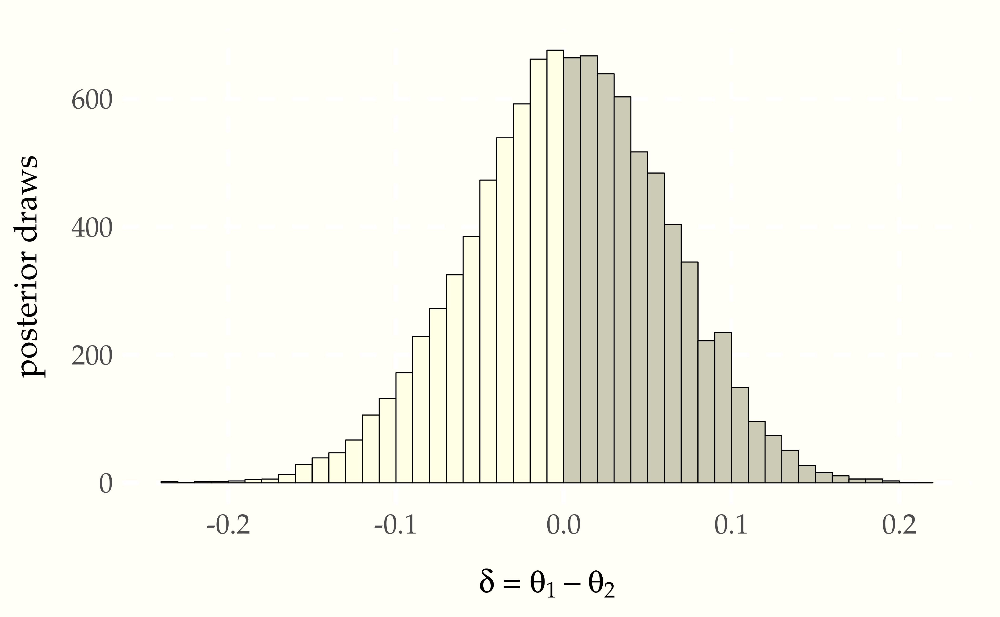

Deductive inference works from facts toward conclusions determinstically. For example, if I tell you that all men are mortal and that Socrates is a man, you can deductively conclude that Socrates is mortal. Inductive inference, on the other hand, is a bit more slippery to define, as it works from observations back to facts. That is, if we think of the facts as governing or generating the observations, then induction is a kind of inverse inference. Statistical inference is a kind of inductive inference that is specifically formulated as an inverse problem.
The roots of statistical inference lie not in games of chance, but in the realm of public health. Pierre-Simon Laplace was investigating the rate of child births by sex in France in an attempt to predict future population sizes.113 Pierre-Simon Laplace. 1812. Essai philosophique sur les probabilités. H. Remy. p. lvi of the Introduction. Annotated English translation of the 1825 Fifth Edition: Andrew I. Dale, 1995. Philosophical Essay on Probabilities. Springer-Verlag. Laplace reports the following number of live births, gathered from thirty departments of France between 1800 and 1802 was as follows.
\[ \begin{array}[r|r] { } \mbox{sex} & \mbox{live births} \\ \hline \mbox{male} & 110\,312 \\ \mbox{female} & 105\,287 \end{array} \]
Laplace assumed each birth is independent and each has probability \(\Theta \in [0, 1]\) of being a boy. Letting \(Y\) be the number of male births and \(N\) be the total number of births, Laplace assumed the model
\[ Y \sim \mbox{binomial}(N, \Theta). \]
In other words, his data-generating distribution had the probability mass function114 The constant \(N\) that appears in the full binomial notation is suppressed in the density notation \(p_{Y \mid \Theta}\)—it is common to suppress constants in the notation to make the relationship between the modeled data \(Y\) and parameters \(\Theta\) 3easier to scan.
\[ p_{Y \mid \Theta}(y \mid \theta) \ = \ \mbox{binomial}(y \mid N, \theta). \]
Because it employs a binomial distribution, this model assumes that the sex of each baby is independent, with probability \(\theta\) of being a boy. This may or may not be a good approximation to reality. Part of our job is going to be to check the assumptions like this built into our models.
We know how to generate \(Y\) given values for the parameter \(\Theta\), but we are now faced with the inverse problem of drawing inferences about \(\Theta\) based on observations about \(Y\).
We say that this simple formula is a model in the sense that it is not the actual birth process, but rather a mathematical construct meant to reflect properties of the birth process. In this sense, it’s like Isaac Newton’s model of the planetary motions using differential equations.115 Isaac Newton. 1687. Philosophiae Naturalis Principia Mathematica. Translated as I. Bernard Cohen and Anne Whitman. 1999. The Principia: Mathematical Principles of Natural Philosophy. University of California Press. The equations are not the planets, just descriptions of how they move in response to gravitational and other forces.
Models like Newton’s allow us to predict certain things, such as the motion of the planets, the tides, and balls dropped from towers. But they typically only approximate the full process being modeled in some way. Even Newton’s model, which is fabulously accurate at predictions at observable scales, is only an approximation to the finer-grained models of motion and gravity introduced by Albert Einstein.116 Einstein, Albert. 1907. On the relativity principle and the conclusions drawn from it. Jahrbuch der Radioaktivitfit and Elektronik 4:411–462. which itself was only a special case of the more general theory of relativity.117 Einstein, Albert. 1916. The foundation of the general theory of relativity. Annalen Phys. 14:769–822. Each successive model is better than the last in that it’s better at prediction, more general, or more elegant—science does not progress based on a single criterion for improving models.
The reproductive process is complex, and many factors may impinge on the sex of a baby being born. Part of our job as scientists is to check the assumptions of our models and refine them as necessary. This needs to be done relative to the goal of the model. If the goal of this simple reproductive model is only to predict the prevalence of male births at a national scale, then a simple, direct prevalence model with a single parameter like the one we have introduced may be sufficient.
To conclude, when we say “model”, all we have in mind is some mathematical construct taken to represent some aspect of reality. Whether a model is useful is a pragmatic question which must be judged relative to its intended application.
As in all statistical modeling, Laplace treated the observed number of male births \(Y\) as a random variable. This assumes a form of counterfactual reasoning whereby we assume the world might have been some other way than it actually turned out to be.
As in most statistical models, Laplace treated \(N\) as a constant. In many cases, the denominator of binary events is not itself a constant, but is itself a random variable determined by factors of the environment. For instance, the number of attempts an athlete on a sports team get depends on the ability of that athlete and the number of reviews a movie receives depends on its popularity.
As originally formulated by Thomas Bayes,118 Bayes, T., 1763. LII. An essay towards solving a problem in the doctrine of chances. By the late Rev. Mr. Bayes, FRS communicated by Mr. Price, in a letter to John Canton, AMFRS. Philosophical Transactions of the Royal Society, pp. 370–418. Laplace also treated \(\Theta\) as a random variable. That is, Laplace wanted to infer, based on observation and measurement, that the probability that \(\Theta\)’s value was in a certain range. Specifically, Laplace was curious about the question of whether the male birth rate is higher, which can be expressed in probabilistic terms by the event probability \(\mbox{Pr}[\Theta > 0.5]\).
Given a total of \(N\) births, we have introduced random variables for
We also have the actual observed number of male births, \(y\). That is, we know the value of the random variable \(Y\). Given our observed data, we can ask two obvious questions, namely
Given that \(\Theta\) is the male birth rate, the first question is asking about the value of \(\Theta\). To provide a probabilistic answer, we want to look at the distribution of \(\Theta\) given that we observe the actual data \(Y = y\), which has the density \(p_{\Theta \mid Y}(\theta \mid y)\). We can summarize this distribution probabilistically using intervals, for instance by reporting the central 95% interval probability,
\[ \mbox{Pr}\left[ 0.025 \leq \Theta \leq 0.975 \ \Big| \ Y = y \right]. \]
The second question, namely whether boys are more likely to be born, is true if \(\Theta > \frac{1}{2}\). The probability of this event is
\[ \mbox{Pr}\left[ \Theta > \frac{1}{2} \ \Bigg| \ Y = y \right]. \]
If we can estimate this event probability, we can answer Laplace’s second question.119 The quality of the answer will be determined by the quality of the data and the quality of the model.
The model we have is a generative model120 Also known as a forward model or a mechanistic model by scientists.—it works from a parameter value \(\theta\) to the observed data \(y\) through a sampling distribution with probability function \(p_{Y \mid \Theta}(y \mid \theta).\) What we need to solve our inference problems is the posterior density \(p_{\Theta \mid Y}(\theta \mid y)\). Bayes realized that the posterior could be defined in terms of the sampling distribution as
\[ \begin{array}{rcl} p_{\Theta \mid Y}(\theta \mid y) & = & \frac{\displaystyle p_{Y \mid \Theta}(y \mid \theta) \times p_{\Theta}(\theta)} {\displaystyle p_Y(y)} \\[6pt] & \propto & p_{Y \mid \Theta}(y \mid \theta) \times p_{\Theta}(\theta). \end{array} \]
All of our sampling algorithms will work with densities known only up to a proportion.
This still leaves the not inconsequential matter of how to determine \(p_{\Theta}(\theta)\), the density of the so-called prior distribution of \(\Theta\). The prior distribution encapsulates what we know about the parameters \(\Theta\) before observing the actual data \(y\). This prior knowledge may be derived in many different ways.
Because we are working probabilistically, our prior knowledge will itself be modeled with a probability distribution, say with density \(p_{\Theta}(\theta)\). The prior distribution may depend on parameters, which may be constants or may themselves be unknown. This may seem like an awfully strong imposition to have to express prior knowledge as a density. If we can express our knowledge well and sharply in a distribution, we will have an informative prior. Luckily, because we are only building approximate models of reality, the prior knowledge model does not need to be perfect. We usually err on the side of underpowering the prior a bit compared to what we really know, imposing only weakly informative priors, such as those that determine scales, but not exact boundaries of parameters.121 The notion of a truly uninformative prior is much trickier, because to be truly uninformative, a prior must be scale free.
We will have a lot to say about prior knowledge later in the book, but for now we can follow Laplace in adopting a uniform prior for the rate of male births,
\[ \Theta \sim \mbox{uniform}(0, 1). \]
In other words, we assume the prior density is given by
\[ p_{\Theta}(\theta) = \mbox{uniform}(\Theta \mid 0, 1). \]
Here, the bounds zero and one, expressed as constant parameters of the uniform distribution, are logical constraints imposed by the fact that the random variable \(\Theta\) denotes a probability.
Other than the logical bounds, this uniform prior distribution is saying a value in the range 0.01 to 0.05 is as likely as one in 0.48 to 0.52. This is a very weak prior indeed compared to what we know about births. Nevertheless, it will suffice for this first analysis.
With a prior and likelihood,122 Remember, the likelihood is just the sampling distribution \(p_{Y \mid \Theta}(y \mid \theta)\) viewed as a function of \(\theta\) for fixed \(y\). we have our full joint model in hand,
\[ p_{Y \mid \Theta}(y \mid N, \theta) \times p_{\Theta}(\theta) \ = \ \mbox{binomial}(y \mid N, \theta) \times \mbox{uniform}(\theta \mid 0, 1). \]
We have carried along the constant \(N\) so we don’t forget it, but it simply appears on the right of the conditioning bar on both sides of the equation.
The sampling distribution \(p(y \mid \theta)\) is considered as a density for \(y\) given a value of \(\theta\). If we instead fix \(y\) and view \(p(y \mid \theta)\) as a function of \(\theta\), it is called the likelihood function. As a function, the likelihood function is not itself a density. Nevertheless, it is crucial in posterior inference.
With Bayes’s rule, we know the posterior is proportional to the prior times the likelihood,
\[ \underbrace{p_{\Theta \mid Y}(\theta \mid y)}_{\text{posterior}} \ \propto \ \underbrace{p_{Y \mid \Theta}(y \mid \theta)}_{\text{likelihood}} \ \times \ \underbrace{p_{\Theta}(\theta)}_{\text{prior}}. \]
Given the definitions of the relevant probability functions,123 For reference, these are the likelihood \[ \mbox{binomial}(y \mid N, \theta) \ \propto \ \theta^y \times (1 - \theta)^{N - y} \] and the prior \[ \mbox{uniform}(\theta \mid 0, 1) \ = \ 1. \] we have
\[ \begin{array}{rcl} p_{\Theta \mid Y}(\theta \mid y, N) & \propto & \mbox{binomial}(y \mid N, \theta) \times \mbox{uniform}(\theta \mid 0, 1) \\[4pt] & \propto & \theta^y \times (1 - \theta)^{N - y} \end{array} \]
To summarize, we know the posterior \(p_{\Theta \mid Y}\) up to a proportion, but are still missing the normalizing constant so that it integrates to one.124 We return to the normalizer later when we discuss the beta distribution.
Now that we have a formula for the posterior up to a proportion, we are in business for sampling from the posterior. All of the sampling algorithms in common use require the density only up to a proportion.
For now, we will simply assume a method exists to draw a sample \(\theta^{(1)}, \cdots, \theta^{(M)}\) where each \(\theta^{(m)}\) is drawn from the posterior \(p_{\Theta \mid y}(\theta \mid y)\) given the observed data \(y\).
When we do begin to employ general samplers, they are going to require specifications of our models that are exact enough to be programmed. Rather than relying on narrative explanation, we’ll use a pseudocode for models that can be easily translated for an assortment of posterior samplers.125 This specification is sufficient for coding a sampler in BUGS, Edward, emcee, Greta, JAGS, NIMBLE, PyMC, Pyro, or Stan.
\[ \begin{array}{r|lr} \mbox{Name} & \mbox{simple binomial} \\ \hline \mbox{Data} & N \in \mathbb{N} \\ & y_n \in \{ 0, 1 \} & \mbox{ } \hfill \mbox{for} \ n \in 1:N \\ \hline \mbox{Parameters} & \theta \in (0, 1) \\ \hline \mbox{Prior} & \theta \sim \mbox{uniform}(0, 1) \\ \hline \mbox{Likelihood} & y_n \sim \mbox{binomial}(N, \theta) & \mbox{ } \hfill \mbox{for} \ n \in 1:N \end{array} \]
Rather than starting with Laplace’s data, which will present computational problems, we will start with some simulated data. We simulate data for a model by simulating the parameters from the prior, then simulating the data from the parameters. That is, we run the model in the forward direction from prior to parameters to data. This is usually how we construct the models in the first place, so this should be a natural step. In pseudocode, this is a two-liner.
theta = uniform_rng(0, 1)
y = binomial_rng(N, theta)
print 'theta = ' theta '; y = ' yBefore we can actually simulate, we need to set the constants, because they don’t have priors. Here, we’ll just take \(N = 10\) for pedagogical convenience. Let’s run it a few times and see what we get.
theta = 0.29; y = 4
theta = 0.41; y = 6
theta = 0.94; y = 10
theta = 0.53; y = 3
theta = 0.55; y = 6The values simulated for \(\theta\) are not round numbers, so we know that we won’t satisfy \(y = N \times \theta\), the expected value of a random variable \(Y\) such that \(Y \sim \mbox{binomial}(N, \theta)\). From an estimation perspective, we won’t have \(\theta = y / N\), either. So the question becomes what are reasonable values for \(\theta\) based on our observation of \(y\)? That’s precisely the posterior, so let’s proceed to sampling from that. We’ll just assume we have a function that samples from the posterior of a model with a given name when passed the data for the model. Here, the data consists of the values of \(y\) and \(N\), and we will run \(M = 1\,000\) iterations.
N = 10
y = 3
theta[1:M] = posterior_sample('simple binomial', y, N)
print 'theta = ' theta[1:10] '...'Let’s run that and see what a few posterior draws look like.
theta =
0.41 0.16 0.23 0.27 0.56 0.39 0.40 0.35 0.25 0.42It’s hard to glean much from the draws. What it does tell us is that the posterior in the range we expect it to be in—near 0.3, because the data was \(y = 3\) boys in \(N = 10\) births. The first thing we want to do with any posterior is check that it’s reasonable.
For visualizing draws of a single variable, such as the proportion of boy births \(\theta\), histograms are handy.
Figure 7.1: Histogram of one thousand draws from the posterior \(p(\theta \mid y)\). With thirty bins, the histogram appears ragged, but conveys the rough shape and location of the posterior.
Let’s up \(M\) to \(1\,000\,000\) and double the number of bins to get a better look at the posterior density. 126 A sample size \(M > 100\) is rarely necessary for calculating estimates, event probabilities, or other expectations conditioned on data. For histograms, many draws are required to ensure low relative error in every bin so that the resulting histogram is smooth.
Figure 7.2: Histogram of one million draws from the posterior \(p(\theta \mid y)\). A much larger \(M\) is required to get a fine-grained view of the whole posterior distribution than is required for an accurate summary statistic.
Histograms have their limitations. The distribution is slightly asymmetric, with a longer tail to the right than to the left, but asymmetry can be difficult to detect visually until it is more extreme than here. Asymmetric distributions are said to be skewed, either to the right or left, depending on which tail is longer.127 The formal measurement of the skew of a random variable \(Y\) is just another expectation that may be estimated via simulation, \[\mbox{skew}[Y] = \mathbb{E}\left[\left(\frac{Y - \mathbb{E}[Y]}{\mbox{sd}[Y]}\right)^3\right].\] It’s also hard to tell the exact location of the posterior mean and median visually.
We often want to look at summaries of the posterior, the posterior mean, standard deviation, and quantiles being the most commonly used in practice. These are all easily calculated based on the sample draws.
Calculating the posterior mean and standard deviation are as simple as calling built-in mean and standard deviation functions,
print 'estimated posterior mean = ' mean(theta) '
print 'estimated posterior sd = ' sd(theta) 'Let’s see what we get.
estimated posterior mean = 0.33
estimated posterior sd = 0.13The posterior mean and standard deviation are excellent marginal summary statistics for posterior quantities that have a roughly normal distribution.128 Most posterior distributions we will consider approach normality as more data is observed. If the posterior distribution has very broad or narrow tails or is highly skewed, standard deviation and mean are less useful.
We can estimate quantiles just as easily, assuming we have built-in functions to compute quantiles.
print 'estimated posterior median = ' quantile(theta, 0.5)
print 'estimated posterior central 80 pct interval = '
quantiles(theta, { 0.1, 0.9 })Running this produces the following.129 The median is slightly lower than the mean, as they will be in right skewed distributions.
estimated posterior median = 0.32
estimated posterior central 90 pct interval = (0.17, 0.51)The posterior simulations and summaries answer Laplace’s question about the value of \(\theta\), i.e., the proportion of boys born, at least relative to this tiny data set.
We have reported a central 90% interval here. It is a 90% interval in the sense that it is 90% probable to contain the value (relative to the model, as always). We have located that interval centrally in the sense that it runs from the 5% quantile to the 95% quantile.
There is nothing privileged about the width or location of a posterior interval. A value is as likely to be in a posterior interval from the 1% quantile to the 91% quantile, or from the 10% quantile to the 100% quantile. The width is chosen to be convenient to reason about. With a 90% interval, we know roughly nine out of ten values will fall within it, and choosing a central interval gives us an idea of the central part of the distribution.
To answer the question about whether boys are more prevalent than girls, we need to estimate \(\mbox{Pr}[\theta > 0.5]\), which is straightforward with simulation. As usual, we just count the number of times that the simulated value \(\theta^{(m)} > 0.5\) and divide by the number of simulations \(M\),
print 'estimated Pr[theta > 0.5] = ' sum(theta > 0.5) / MRunning this, we see that with 3 boys in 10 births, the probability boys represent more than 50% of the live births is estimated, relative to the model, to be
estimated Pr[theta > 0.5] = 0.11Now let’s overlay the median and central 90% interval.
Figure 7.3: Histogram of \(1\,000\,000\) draws from the posterior \[p(\theta \mid y, N) \propto \mbox{binomial}(y \mid N, \theta),\] given \(N = 10, y = 3\). The median (50% quantile) is indicated with a dashed line and the boundaries of the central 90% interval (5% and 95% quantiles) are picked out with dotted lines. The proportion of the total area shaded to the right of 0.5 represents the posterior probability that \(\theta > 0.5,\) which is about 11%.
What happens if we use Laplace’s data, rather than our small data set, which had roughly 110 thousand male births and 105 thousand female? Let’s take some draws from the posterior \(p(\theta \mid y, N)\) where \(y = 110\,312\) boys out of \(N = 110\,312 + 105\,287\) total births. We’ll take \(M = 1\,000\,000\) simulations \(\theta^{(1)}, \ldots, \theta^{(M)}\) here because they are cheap and we would like low sampling error.

The mean of the posterior sample is approximately 0.511, or a slightly higher than 51% chance of a male birth. The central 90% posterior interval calculated from quantiles of the sample is \((0.510, 0.513)\).
What about the event probability that boy births are more likely than girl births, i.e., \(\mbox{Pr}[\theta > 0.5]\)? If we make our usual calculation, taking draws \(\theta^{(1)}, \ldots, \theta^{(M)}\) from the posterior and look at the proportion for which \(\theta^{(m)} > 0.5\), the result is 1. No decimal places, just 1. If we look at the draws, the minimum value of \(\theta^{(m)}\) in \(1\,000,000\) draws was approximately 0.506. The proportion of draws for which \(\theta^{(m)} > 0.5\) is thus 100%, which forms our estimate for \(\mbox{Pr}[\theta > 0.5]\).
As we have seen before, simulation-based estimates provide probabilistic guarantees about absolute tolerances. With \(100\,000\) draws, we are sure that the answer is 1.0000 to within plus or minus 0.0001 or less.130 Tolerances can be calculated using the central limit theorem, which we will define properly when we introduce the normal distribution later. We know the answer must be strictly less than one. Using some analytic techniques,131 The cumulataive distribution function of the posterior, which is known to be the beta distribution \[p(\theta \mid y, N) = \mbox{beta}(\theta \mid y + 1, N - y + 1).\] the true estimate to within 27 decimal places is
\[ \mbox{Pr}[\theta > 0.5] = 1 - 10^{-27}. \]
Thus Laplace was certain that the probability of a boy being born was higher than that of a girl being born.
The first example of Laplace’s is simple in that it has only a single parameter of interest, \(\theta\), the probability of a male birth. Now we will consider a very similar model with two variables, so that we can do some posterior comparisons. We will consider some simple review data for two New York City-based Mexican restaurants. The first contender is Downtown Bakery II, an East Village Mexican restaurnat has \(Y_1 = 114\) out of \(N_1 = 235\) 5-star reviews on Yelp, La Delicias Mexicanas, in Spanish Harlem, has \(Y_1 = 24\) out of \(N_2 = 51\) 5-start reviews. Our question is, which is more likely to deliver a 5-star experience? In terms of proportion of 5-star votes, they are close, with Downtown Bakery garnering 49% 5-star reviews and La Delicias only 47%. Knowing how noisy binomial data is, this is too close to call.
We’ll model each restaurant independently for \(n \in 1:2\) as
\[ Y_n \sim \mbox{binomial}(N, \Theta_n) \]
with independent uniform priors for \(n \in 1:2\) as
\[ \Theta_n \sim \mbox{uniform}(0, 1). \]
We can now draw \(\theta^{(1)}, \ldots, \theta^{(M)}\) simulations from the posterior \(p_{\Theta \mid Y, N}(\theta \mid y, N)\) as usual.
The main event is whether \(\theta_1 > \theta_2\)—we want to know if the probability of getting a five-star review is higher at Downtown Bakery than La Delicias. All we need to do is look at the posterior mean of the indicator function \(\mathrm{I}[\theta_1 > \theta_2]\). The calculus gets more complicated—a double integral is now required because there are two variables. The simulation-based estimate, on the other hand, proceeds as before, counting proportion of draws in which the event is simulated to occur.
\[ \begin{array}{rcl} \mbox{Pr}[\theta_1 > \theta_2 \mid y, N] & = & \int_0^1 \int_0^1 \, \mathrm{I}[\theta_1 > \theta_2] \times p(\theta_1, \theta_2 \mid y, N) \, \mathrm{d} \theta_1 \, \mathrm{d} \theta_2 \\[8pt] & \approx & \frac{1}{M} \sum_{m = 1}^M \mathrm{I}[\theta_1^{(m)} > \theta_2^{(m)}]. \end{array} \]
In pseudocode, this is just
success = 0
for (m in 1:M)
draw theta(m) from posterior p(theta | y, N)
if (theta(m)[1] > theta(m)[2])
success += 1
print 'Pr[theta[1] > theta[2] | y, M] = ' success / MLet’s run that with \(M = 10\,000\) simulations and see what we get:
Pr[theta[1] > theta[2] | y, M] = 0.52Only about a 52% chance that Downtown Bakery is the better bet.132 As much as this diner loves Downtown Bakery, the nod for food, ambience, and the existence of beer goes to La Delicias Mexicanas.
To get a sense of the posterior, we can construct a histogram of posterior draws of \(\Delta = \Theta_1 - \Theta_2\).
Figure 7.4: Histogram of posterior differences between probabilty of Downtown Bakery getting a 5-star review (\(\theta_1\)) and that of La Delicias Mexicanas getting one (\(\theta_2\)). The draws for which \(\delta > 0\) (equivalently, \(\theta_1 > \theta_2\)) are shaded darker. The area of the darker region divided by the total area is the estimate of the probability that Downtown Bakery is more likely to get a 5-star review than La Delicias Mexicanas.
There is substantial uncertainty, and only 52% of the draws lie to the right of zero. That is,
\[\mbox{Pr}[\theta_1 > \theta_2] \ = \ \mbox{Pr}[\delta > 0] \ \approx \ 0.52.\]